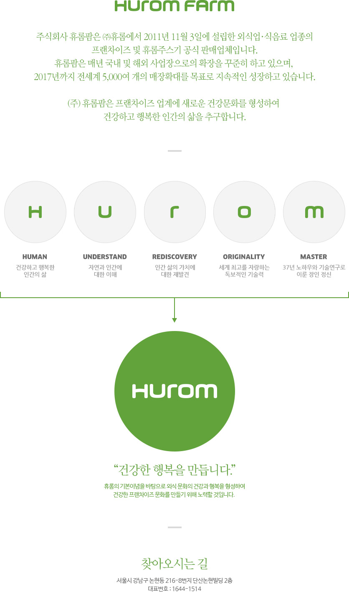
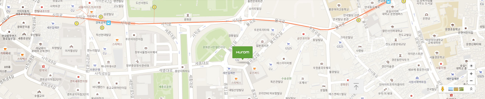

(주)휴롬팜
“휴롬팜은 프랜차이즈 업계에 새로운 건강문화를 형성하여 건강하고 행복한 인간의 삶을 추구합니다.”

HUROM
주식회사 휴롬팜은 (주)휴롬에서 2011년 11월 3일에 설립한 외식업/식음료 업종의 프랜차이즈 및 휴롬주스기 공식 판매업체입니다. 휴롬팜은 매년 국내 및 해외 사업장으로의 확장을 꾸준히 하고 있으며, 2017년까지 전세계 5,000여 개의 매장확대를 목표로 지속적인 성장하고 있습니다.
(주)휴롬팜은 프랜차이즈 업계에 새로운 건강문화를 형성하여 건강하고 행복한 삶을 추구합니다.
-
H : HUMAN
건강하고 행복한 인간의 삶
-
U : UNDERSTAND
자연과 인간에 대한 이해
-
R : REDISCOVERY
인간 삶의 가치에 대한 재발견
-
O : ORIGINALTY
세계 최고를 자랑하는 독보적인 기술력
-
M : MASTER
37년 노하우와 기술연구로 이룬 장인 정신
휴롬의 기본이념을 바탕으로 외식 문화의 건강과 행복을 형성하여 건강한 프랜차이즈 문화를 만들기 위해 노력할 것입니다.
찾아오시는 길서울시 강남구 논현동 216-8번지 단산논현빌딩 2층 대표번호 : 1644-1514
